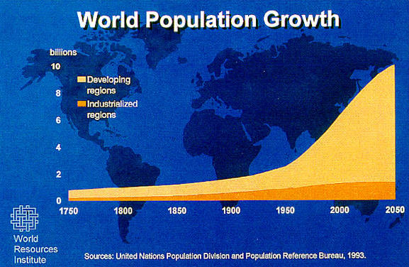

 As of August 6, 2015 the world's human population is estimated to be 7.262 billion. The population is expected to reach between 8 and 10.5 billion between the year 2040.
Overpopulation isn't just population density (amount of people per landmass). Overpopulation applies much more so to the number of people in an area exceeding the resources and the carrying capacity of the environment necessary to sustain human activities. So much focus is placed on the rapid population growth in third world countries. However, when we compare lifestyles of the rich countries vs. the poor countries, the rich countries are a much greater problem. For example, Americans constitute less than five percent of the world's total population, but consume 26% of the world's energy. Just as much as the population size, we need to consider the resources consumed by each person, and the damage done by technologies used to supply them. Overpopulation is when the number of people can not be permanently maintained without depleting resources and without degrading the environment and the people's standard of living. Because we are rapidly using up resources around the world, virtually all nations are overpopulated. This applies even more so to the rich nations. As we use up the resources, the earth's carrying capacity continues to decrease.
Just like with people, an overpopulation of animals is not defined by the number of animals that could hypothetically fit within a specific area, but rather when the number of animals that occupy their habitat are not capable of behaving as they naturally would. Unfortunately, the animals' behavior is often altered not so much by their number, but by humans encroaching upon their habitat and then claiming the animal to be a nuisance to man. We should practice the saying "live and let live", but we do not have the resources to do this while our number continues to increase.